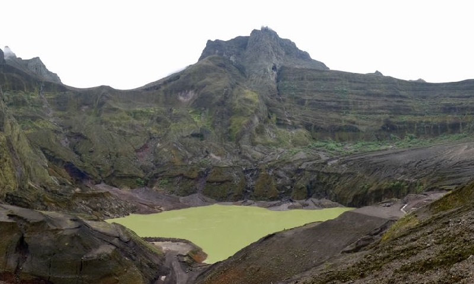
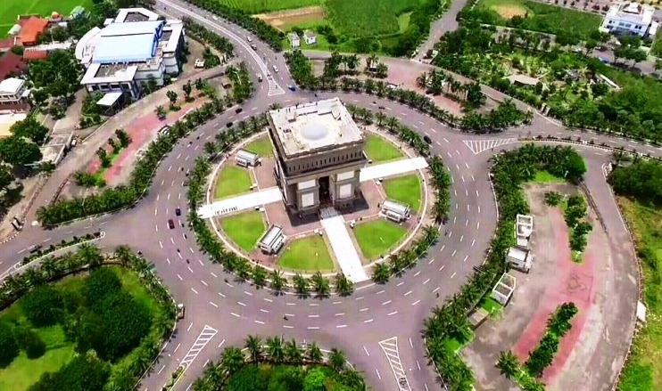

Gunung kelud memang mempunyai segudang keindahan yang bisa anda nikmati. Terletak sekitar 30 Km dari pusat Kota Kediri menuju arah timur objek wisata gunung kelud ini memang menjadi salah satu destinasi objek wisata gunung berapi yang sangat indah di jawa timur selain objek wisata gunung bromo atapun objek wisata gunung semeru.Pada artikel kali ini koswisata menginformasikan kepada anda semua tentang keindahan wisata gunung keludini. Perjalanan ke tempat wisata gunung kelud dari kota kediri memang bisa dibilang lumayan jauh. Dan kunjungan koswisata kali ini adalah kunjungan yang ke sekian kalinya ke gunung yang terakhir meletus pada tahun 2007 kemarin. Perjalanan kami mulai dari Kota Kediri pada siang hari sekitar pukul 13.00, tujuan kami berangkat siang hari adalah karena kami ingin menikmati pemandangan indah yang disajikan di jalan menuju kawah gunung kelud.
Lokasi

Monumen Simpang Lima Gumul merupakan sebuah monumen di Kediri yang didirikan dengan tujuan memajukan perekonomian masyarakat Kediri. Namun Beberapa kabar menyatakan bahwa Monumen yang populer dengan sebutan “SLG” ini didirikan atas dasar amanat Raja Kediri pada abad XII yang ingin menyatukan 5 daerah yang berada di Kabupaten Kediri.
Lokasi

Air terjun Dolo Kediri Jawa Timur merupakan tempat wisata alam di Kediri yang berada di dusun besuki, desa jugo, kecamatan mojo, kabupaten Kediri,Jawa Timur. Air terjun Dolo Besuki Kediri ini berlokasi di lereng gunung, yaitu gunung wilis.Gunung ini memiliki ketinggian 2.850 meter di atas permukaan laut. Letak air terjun Dolo yang berada di pegunungan membuat tempat wisata ini memiliki suhu yang amat dingin, bahkan ketika cuaca memburuk, wilayah ini akan tertutup oleh kabut. Tentu saja cuaca dingin dan suhu air yang dingin, akan bertambah dingin ketika kabut mulai datang.
Lokasi